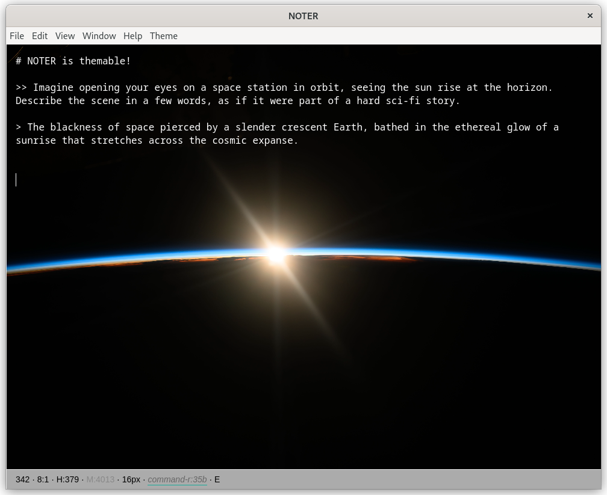
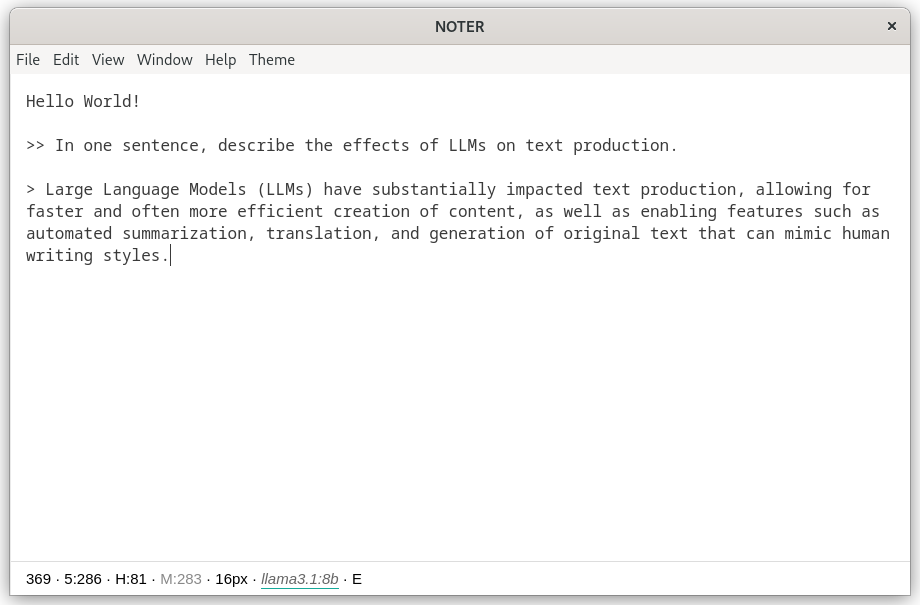
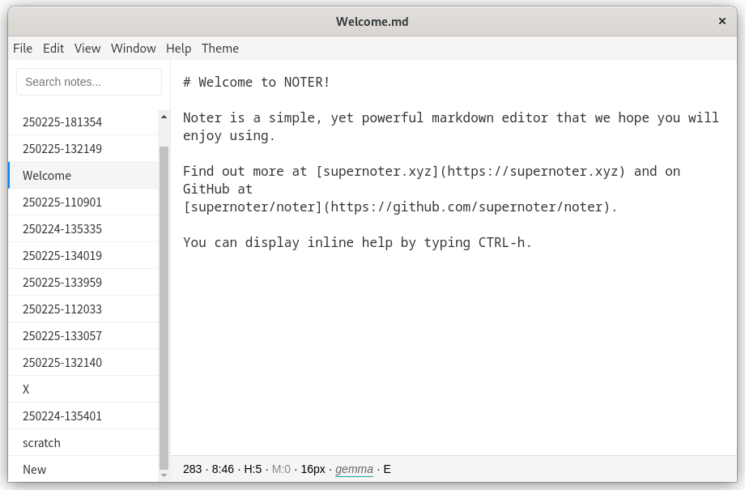

About
NOTER is an open source, minimalistic, themable markdown editor that seamlessly integrates with large-language models (LLM). If you happen to run ollama locally, NOTER will automatically connect to the instance. It is currently in beta stage: you can download it, run it and use it, but some functionality may be incomplete or missing.
Installation
NOTER is available for MacOS, Windows and Linux (deb, rpm, AppImage) - you can download our latest version from our releases page.
Note that we currently do not sign the MacOS and Windows binaries and that you may need to pass security warnings in order to run the application.
Features
- edit markdown and preview rendered markdown
- custom theme configuration
- export markdown notes directly to good looking PDF (example)
- navigate your notes (in a default notes folder) quickly with sidebar and filename filter
- seamless integration with open source large language models, such as provided by ollama
- informative status bar shows live character count and more
- load and save any text document
- inline help
A note on privacy
We value privacy and NOTER comes with all assets like fonts packaged and we also do not track you on this website, nor does NOTER connect to any other server except for the LLM endpoint, which you can run locally with ollama as well. In 2025, where almost any interaction on the web is tracked, enjoy a moment of calm with a classic desktop application, that respects your online freedom.
Demo
Screenshots



Reference
Access help within the editor with CTRL-h or F1.
Keyboard Shortcuts
| Keyboard Shortcut | Functionality |
|---|---|
| CTRL-E | Export note to PDF |
| CTRL-B | Toggle sidebar |
| CTRL-G | Call out to the configured LLM and insert response to a prompt |
| CTRL-H, F1 | Toggle help |
| CTRL-N | Create a new note |
| CTRL-O | Open an existing file |
| CTRL-P | Toggle HTML preview |
| CTRL-S | Save file |
| CTRL-SHIFT-S | Save file as … |
| CTRL-+ | Increase font size |
| CTRL– (minus) | Decreate font size |
Configuration
You can customize the editor in many ways, using a config.json file located in standard locations for different platforms:
- %APPDATA% on Windows
- $XDG_CONFIG_HOME or ~/.config on Linux
~/Library/Application Support/noteron MacOS
Changes are applied at editor startup time. Below is an example config file:
{
"window": {
"opacity": 1,
"width": 900,
"height": 550
},
"font": {
"colour": "blue",
"size": "16px",
"family": "monospace, monospace"
},
"background": {
"colour": "white",
"gradient": null,
"image": null,
"opacity": "100%"
},
"status-bar": {
"font": {
"colour": "black",
"size": "14px",
"family": "Arial"
},
"background": {
"colour": "white"
}
},
"preview": {
"font": {
"colour": "black",
"size": "20px",
"family": "Arial"
},
"background": {
"colour": "blue"
}
},
"ollama_host": "http://localhost:11434",
"ollama_model_name": "gemma"
}Authors
NOTER is brought to you in Winter 2024/2025 by 🌍 temporary working group consisting of Felix, Martin, Guilherme, Dennis, Gio and contributors.
Development notes
We compiled a Git tutorial to get started with version control.